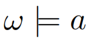
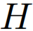
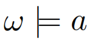
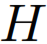

if for every
if for every  there is
there is  with .  is called a card-minimal hitting set if it is minimal wrt. cardinality. Let
with .  is called a card-minimal hitting set if it is minimal wrt. cardinality. Let  be the cardinality of any card-minimal hitting set (define
be the cardinality of any card-minimal hitting set (define  if there does not exist a hitting set of ). Then the hitting set inconsistency measure
if there does not exist a hitting set of ). Then the hitting set inconsistency measure  is defined as
is defined as